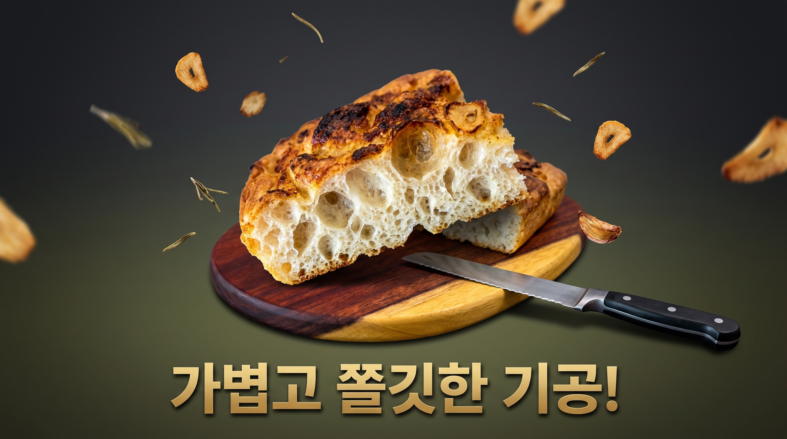

Step 01.
탕종과 순두부의 만남
밀가루를 익혀 만든 탕종이 수분을 오래 가두어 노화를 늦춥니다.
거기에 물기 가득한 순두부를 섞어 한층 촉촉하고 쫄깃한 식감을 예고합니다.
Step 02.
기다림으로 빚은 탄력
상온에서 폴딩을 거쳐 글루텐을 정돈한 반죽은 냉장고로 들어갑니다.
12~16시간 저온숙성 동안 천천히 숙성되며 포카치아만의 풍미를 깊이 피워냅니다.

Step 03.
마늘 향 가득 골든 베이킹
올리브오일과 다진 마늘 소스를 듬뿍 바르고 굵은 소금과 슬라이스 마늘을 얹습니다.
190~200℃의 열기 속에서 겉은 바삭하고 마늘은 칩처럼 노릇하게 피어납니다.